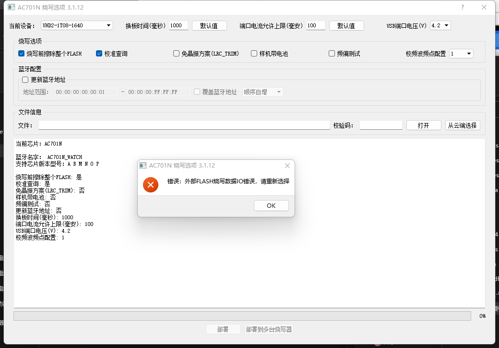

2.7. PC Tool Error Messages and Solutions
2.7.1. External FLASH programming data IO error
When deploying in the PC tool, the error shown in External FLASH programming data IO error is displayed.

External FLASH programming data IO error
Cause:
The [SYS_CFG_PARAM] section of the download directory configuration file isd_config.ini contains the following configuration items:
EX_FLASH
EX_FLASH_IO
However, in the download.bat script, isd_download.exe is not given the parameter:
-ex_flash
to specify the external FLASH data file.
Fix:
If external FLASH data needs to be downloaded, add the following parameters to isd_download.exe in the download.bat script:
-ex_flash res.bin
:: -ex_flash # parsing parameter required by the 1-to-8 programmer
:: res.bin # the packed resource file; use this name whenever possible, because OTA upgrades recognize only this name
Add the following configuration items to the [SYS_CFG_PARAM] section of the download directory configuration file isd_config.ini:
EX_FLASH=PA08_1C_NULL;
In the example configuration, the CS pin is PA08,
port C of SPI1 is used,
and if the norflash is powered from vddio, simply enter NULL; otherwise, enter the corresponding pin number
If external FLASH data does not need to be downloaded, delete the following isd_download.exe parameters from the download.bat script:
-ex_flash res.bin
as well as the following items under [SYS_CFG_PARAM] in isd_config.ini:
EX_FLASH
EX_FLASH_IO